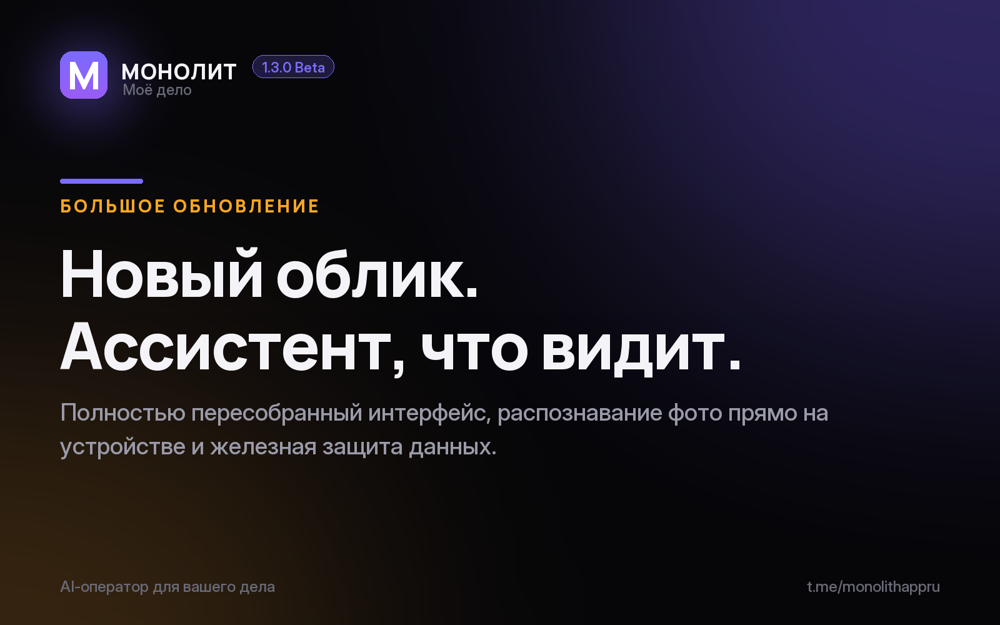

Дневник разработки · 05.07.2026
МОНОЛИТ 1.3.0 Beta — большое обновление облика

Приложение пересобрано от знака до последнего экрана. Три главные перемены:
🎨 Новый облик. Дизайн-база «индиго × эмбер на обсидиане»: живое кольцо «Пульс» держит деньги месяца, свой набор иконок вместо стоковых на каждом экране, навбар прячется при прокрутке — максимум места отдан делу. Свет идёт изнутри, а не тяжёлыми тенями.
📸 Ассистент видит фото. Сфотографировали чек, договор или переписку — текст сам ложится в поле ввода. Распознавание идёт прямо на телефоне: ничего не уходит в сеть.
🔒 Данные под замком. Заказы, клиенты и задачи получили железные уникальные коды — в общих базах и на сервере они не смешаются и не утекут не туда.
Всё это уже в свежей бете. Хотите тестировать на Android? Напишите @sbphotoshoter — пришлю APK.
МОНОЛИТ — учёт заказов, клиентов и денег одной фразой. Windows и Android, бесплатная бета.
Скачать Читать канал